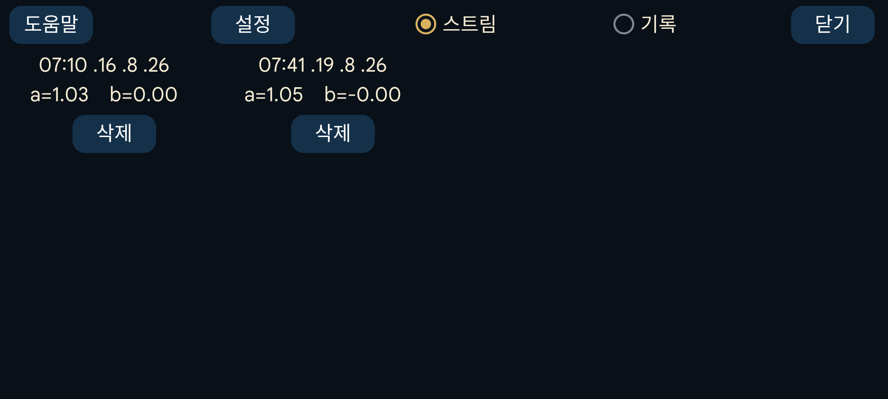

이 센서에 적용한 보정을 표시합니다. 각 보정은 보정을 수행한 시각과, 혈당과 센서 혈당의 관계를 나타내는 기울기(a) 및 절편(b)으로 구성됩니다:
혈당 = a × 센서혈당 + b
왼쪽 메뉴→설정→보정에서 “기울기 변경”을 설정하지 않으면 a=1이므로 b만 결정됩니다.
스트림: 스트림 값의 보정을 표시합니다. 스트림은 측정 당시 즉시 표시되는 값이며 알람과 브로드캐스트에 사용됩니다.
기록: 기록 값의 보정을 표시합니다(FreeStyle Libre 및 CareSens Air에만 있음). 기록 값은 나중에 구성된 수정 값으로 LibreLink와 CareSens Air 앱에 표시되는 값입니다.
오른쪽 가운데 메뉴에서 ‘스트림’과 ‘기록’의 왼쪽에 있는 ‘-’를 누르면 각각 보정된 스트림 곡선과 보정된 기록 곡선의 표시를 켜거나 끌 수 있습니다. 각 항목 오른쪽의 [ ]/[x]는 보정되지 않은 값의 표시를 켜거나 끕니다.
보정을 누르면 보정 시각으로 이동합니다. “삭제”를 누르면 해당 보정이 제거됩니다.
설정: 왼쪽 메뉴→설정→보정으로 이동하는 다른 방법입니다.